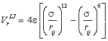
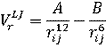
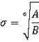
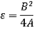

A computational model of a small periodic box
containing 216 water molecules
Water molecular models are computational techniques that have been developed to help discover the structure of water.
 Parameterization of the water models
Parameterization of the water models
 Water model descriptions
Water model descriptions
 Water model properties
Water model properties
 Aqueous solutions
Aqueous solutions
 The Lennard-Jones relationship
The Lennard-Jones relationship
'with four parameters I can fit an elephant,
and with five I can make him wiggle his trunk'
Enrico Fermi as stated in [2438]
'although the model can be very accurate in many respects,
it should not be confused with the real liquid'
Nilsson, Schlesinger and Pettersson [2569]
For reviews of the development of water models, see [275,2537], for a review of the development of analytical potential energy functions, see [2641], for a review of their use in supercritical water see [433], for an appraisal of their accomplishments see [400], for a comparison of some important nonpolarizable models see [1478], for a review of progress in ab initio methods see [1611], and for a discussion of their use in biomolecular simulations see [3395]. It should be noted that most simulations using models can only investigate structural changes and interactions over very short timescales, generally less than a few microseconds. Although computers have become more powerful, simulations often involve more complicated calculations with greater numbers of constituent molecules and exponentially growing interactions. Reliable experimental data are always to be preferred over results obtained by simulation methods
Water models are helpful given the basis that if the (known but hypothetical) model (that is, computer water) can successfully predict the physical properties of liquid water, then the (unknown) structure of liquid water is determined. There is a trade-off between the computational complexity of the model and the system's size and complexity that can be computed in a realistic period. Even as computing power increases considerably year on year, the limits imposed by the system size, model complexity, and time restrictions are tested. Simple models can be used in large systems (>10,000 molecules) or for long simulation periods (>10 ns). In contrast, complex but more accurate models (particularly ab initio methods) may only be used for relatively small systems (100-1000) and simulation times (≈ ps). The small scale and short periods of such computations may lead to the, often ignored, possibility of artifacts. Generally, they cannot appreciate any real similar or larger (longer) scale events and should only be used to predict such events with great caution. At present, no water model can be used in simulations involving 100 nm cubes of water or for simulation periods of milliseconds or more. Despite the tremendous investment in time and effort, extrapolated predictions from molecular modeling should not be treated as equal to or superior to experimental evidence.
Models involve orienting electrostatic effects and Lennard-Jones sites that may or may not coincide with one or more of the charged sites.f The Lennard-Jones interaction accounts for the size of the molecules. It is repulsive at short distances,a ensuring that the structure does not completely collapse due to the electrostatic interactions. At intermediate distances, it is significantly attractive but non-directional and competes with the directional attractive electrostatic interactions. This competition ensures a tension between an expanded tetrahedral network and a collapsed non-directional one (for example, similar to that found in liquid noble gases). Generally, each model is developed to fit well with one particular physical structure, or parameter (for example, the density anomaly, radial distribution function or the critical parameters). It comes as no surprise when a model developed to fit specific parameters gives good compliance with these same parameters (for example, see [984]). It is also the case that, despite the heavy computational investment in the calculations, the final agreement (or otherwise) with experimental data is often 'by eye' and not statistically tested or checked for parametric sensitivity. Also, tests for 'fit' often seem to be completed with publication in mind rather than rigor. Thus, many papers use the radial distribution fit with diffraction data as their 'gold standard', despite the major fitted peaks (where the agreement looks so impressive 'by eye') being derived from the tetrahedral nature of water that is built into every model, and overpowering any disagreement in the fine detail. In particular, the O···O radial distribution function masks any underlying complexity and seems to be a poor discriminator between widely differently performing models [1224, 3671]. Indeed, current X-ray and neutron diffraction data cannot distinguish between popular models [1579, 1624, 1667, 1757, 2090]. Also, unfortunately, the purity, isotopic mix, and perhaps even the ortho/para spin state present in real water may cause difficulty over the choice of the value of the physical parameter [400], as models only use one isotopic form, and ignore the spin state and the presence of other entities, such as ions. Also ignored, in all the models described here, is the ease of proton hopping between water molecules (≈ ps) and the positive effect that this must have on cluster stability and formation.
There is
still disagreement over which value of some physical parameters
to use such as for the dipole moment. Whether model
results agree with other physical properties of water then
acts as proof (or otherwise) of their utility. A 15-parameter model based on water monomer and dimer properties shows good agreement with the liquid-vapor coexistence line (clearly influenced by monomer-dimer properties), the critical point, and the surface tension-temperature curve [2334], but important dynamic properties remain to be determined [2333]. However, it does show surprisingly good agreement with the unrelated temperature of maximum density. By and large,
the more fitting parameters required by the model
(and some require over 50), the better the fit. Some models
lack robustness due to their sensitivity to the
precise model parameters [206],
the system size, or the calculation method [619, 649]. A study
of the sensitivity of water's behavior to changes
in the parameters using the TIP4P model potential showed that σ,
followed by the O-H bond length, had significant effects on
the density, enthalpy of vaporization and radial distribution
function fits [494]. A separate sensitivity analysis showed that the thermodynamic properties of water models were most sensitive to the van der Waals repulsive, the short-range coulomb, and the polarization components of the potential [1042]. Classical force field simulations have been shown to underestimate the anomalous fluctuations in water extending from very low to ambient temperatures [3742]
It can be noted that a number of these models use water molecules with a wider (more tetrahedral) H-O-H angle and longer H-O bond length than those expected of gaseous or liquid water, and indicative of the importance of including parameters giving strong hydrogen-bonding [2339]. Water molecules in liquid water are all non-equivalent (differing in their molecular orbitals, their precise geometry, and molecular vibrations; for an extreme case, see the water dimer) due to their hydrogen-bonding status, which is influenced by the arrangement of the surrounding water molecules. Some models are polarizable [867] to make some allowance for this,c,d whereas other simpler models try to reproduce 'average' structures. The Franzese-Stanley coarse grained model for hydration water predicts a phase transition between two liquids with different densities and energies in the supercooled water region, ending in a liquid-liquid critical point [3979].
[Back to Top  ]
]
Water models
A review listed 46 distinct models [400], so indirectly indicating their lack of success in quantitatively reproducing the properties of real water. They may, however, offer helpful insight into water's behavior.
Some of the more successful simple models are opposite with their parameters given below. Model types a, b, and c are all planar, whereas type d is almost tetrahedral. The mid-point site (M) in c, and the lone pair sites (L) in d are labeled q2
Some models are most helpful in understanding the water structure-property relationships. Good examples are the simplified two- and three-dimensional Mercedes-Benz (MB) water models, proposed initially in 1971. These interact with other particles through Lennard-Jones interactions and orientation-dependent hydrogen bonding interactions through three radial arms arranged as in the MB logo [4400].
| σ Å 6 | ε kJ ˣ mol−1 6 | l1 Å | l2 Å | q1 (e) | q2 (e) | θ° | φ° | ||
|---|---|---|---|---|---|---|---|---|---|
SSD [511] |
-8 | 3.016 | 15.319 | - | - | - | - | 109.47 | 109.47 |
SPC [94] |
a | 3.166 | 0.650 | 1.0000 | - | +0.410 | -0.8200 | 109.47 | - |
SPC/E [3] |
a | 3.166 | 0.650 | 1.0000 | - | +0.4238 | -0.8476 | 109.47 | - |
SPC/HW (D2O) [220] |
a | 3.166 | 0.650 | 1.0000 | - | +0.4350 | -0.8700 | 109.47 | - |
| a | 3.166 | 0.650 | 1.0120 | - | +0.410 | -0.8200 | 113.24 | - | |
TIP3P [180] |
a | 3.15061 | 0.6364 | 0.9572 | - | +0.4170 | -0.8340 | 104.52 | - |
| a | 3.1506 | 0.6368 | 0.9600 | - | +0.4170 | -0.8340 | 104.5 | - | |
| a | 3.6453 | 0.8235 | 0.9584 | - | +0.29701 | -0.59402 | 106.48 | - | |
| a19 | 3.7553 | 0.5945 | 0.9499 | - | - | 19 | 105.95 | - | |
QCT[1251] |
a15 | 3.140 | 0.753 | 0.9614 | - | +0.6064 | -1.2128 | 104.067 | - |
| b | 3.23400 | 0.6000 | 0.9430 | 0.06 | +0.5170 | -1.0340 | 106.00 | 127.00 | |
TIP4P [180] |
c | 3.15365 | 0.6480 | 0.9572 | 0.15 | +0.5200 | -1.0400 | 104.52 | 52.26 |
TIP4P-Ew [649] |
c | 3.16435 | 0.680946 | 0.9572 | 0.125 | +0.52422 | -1.04844 | 104.52 | 52.26 |
TIP4P-FQ [197] |
c | 3.15365 | 0.6480 | 0.9572 | 0.15 | +0.631 | -1.261 | 104.52 | 52.26 |
TIP4P/Ice [838] |
c | 3.1668 | 0.8822 | 0.9572 | 0.1577 | +0.5897 | -1.1794 | 104.52 | 52.26 |
TIP4P/2005 [984] |
c | 3.1589 | 0.7749 | 0.9572 | 0.1546 | +0.5564 | -1.1128 | 104.52 | 52.26 |
TIP4P/2005f [1765] |
c | 3.1644 | 0.7749 | 0.9572 | 0.1546 | +0.5564 | -1.1128 | 104.52 | 52.26 |
TIP4P/ε [2444] |
c | 3.165 | 0.7732 | 0.9572 | 0.105 | +0.5270 | -1.054 | 104.52 | 52.26 |
OPC [2168] |
c | 3.1666 | 0.8903 | 0.8724 | 0.1594 | +0.6791 | -1.3582 | 103.6 | 51.8 |
OPC3 [2722] |
a | 3.17427 | 0.68369 | 0.9789 | - | +0.4476 | -0.8952 | 109.47 | - |
| c | four terms used | 0.9681 | 0.141,3 | +0.6213 | -1.2459 | 102.71 | 51.351 | ||
| c | 3.17459 | 0.9445 | 1.0000 | 0.15 | +0.450672 | -0.901344 | 109.47 | - | |
| c | 18 | 18 | 0.9572 | 0.2472 | +0.57 | -1.14 | 104.52 | - | |
| c | 3.69 4,11 | 0.9146 4 | 0.9572 | 0.27 | +0.6113 | -1.2226 | 104.52 | 52.26 | |
| c | 3.18395 | 0.88257 | 0.9572 | 0.24034 | 0.55733 | -1.11466 | 104.52 | 52.26 | |
| c | 17 | 17 | 0.975 | 0.2661 | +0.584 esu | -1.168 esu | 104.52 | - | |
| c/d7 | 3.19833 | 0.67781 | 0.9572 | 0.247M 0.315L |
+0.53070 | -1.1334M -0.1080L |
104.52 | 101.098
|
|
| d | 3.10000 | 0.31694 | 1.0000 | 0.80 | +0.24357 | -0.24357 | 109.47 | 109.47 | |
TIP5P [180] |
d | 3.12000 | 0.6694 | 0.9572 | 0.70 | +0.2410 | -0.2410 | 104.52 | 109.47 |
| d | 3.097 | 0.7448 | 0.9572 | 0.70 | +0.2410 | -0.2410 | 104.52 | 109.47 | |
| d | 3.145 | 0.79 | 0.9572 | 0.70 | +0.394137 | -0.07358 qO -0.641114 |
104.52 | 109.47 | |
| d 20 | 3.156 | 0.6284 | 0.9572 | 0.41 | +0.58014 | -0.17724 | 104.52 | 109.47 | |
| c | five parameters used | 0.9572 | 0.70 | +0.574 | -1.148 | 104.52 | 52.26 | ||
| d | 2.9837 4 | 4 | 0.9572 | 0.5 | varies 5 | -0.42188 | 104.52 | 109.47 | |
| c/d7 | 3.115OO |
0.715OO 0.115HH |
0.980 | 0.8892L 0.230M |
+0.477 | -0.044L -0.866M |
108.00 | 111.00 | |
Some of the above values are varied slightly by different workers. Other workers use diffuse electron density [203] or polarizable versions of the nonpolarizable models, using flexible bonding (for example, SWFLEX-AI), induced dipoles (for example, [181]), energy optimization (for example, the TIP4P-FQ version of TIP4P) or movable charge (for example, SWFLEX-AI), all of which generally give better fit but at a significantly increased computational cost [198]. A comparison of eleven nonpolarizable classical water models (TIP3P, SPC, SPC/E, flexible SPC, TIP4P, TIP4P/Ice, TIP4P/2005, flexible TIP4P/2005, TIP4P-Ew, TIP5P, TIP5P-Ew) has been made with their hydrogen bond networks [4193]. Polarization mutually strengthens the hydrogen bonding and partially compensates for the absence (except statistically) of the known long-range interactions and the dependence of these models on short-ranged forces. Diffuse electron density [203] varies the effective charges with distance. Such models generally perform better away from the ambient conditions under which they are parameterized than the simpler models.
In some circumstances, coarse-grained models are helpful. These are computationally cheap for the number of water molecules used and are particularly useful for biomolecular hydration. They suffer in being less useful as predictors. However, some such models have shown promise, such as one that uses cluster units of four water molecules (an incomplete water tetrahedron) [2656]. Another, using a so-called 'Quantum Drude Oscillator' consisting of a negative charge bound to a positive center by a quantum harmonic oscillator, generates many-body polarization and dispersion interactions [2720]. This model predicts density, surface tension, enthalpy of vaporization, and dielectric constant across phases and at surfaces, demonstrating good transferability.
An eleven-parameter analytical model has been proposed that allows the calculation of properties of water without running simulations. It involves cage structures, two-molecule hydrogen bonding, and Lennard-Jones interactions a [3518]. This model appears similar to my cluster model.
Another modeling system is density functional theory (DFT), which describes the system in terms of its three-dimensional electron density and involves an approximate solution to the Shrödinger equation of a many-body system. Although much valuable and interesting work has been achieved and improvements are ongoing [3064], this methodology is still incapable of accurately predicting the properties of liquid water over a range of conditions [2546].
A variety of methods include nuclear quantum effects in dynamics simulations by combining quantum Boltzmann statistics with classical dynamics. These are computationally expensive methods that can be used to compare with infrared spectra. A comparison of models has given the quasi-centroid molecular dynamics (QCMD) model as best for reproducing fundamental transitions in the spectrum [3756]. [Back to Top  ]
]
The calculated physical properties of some of the water models are given below.
Model |
Dipole moment e |
Dielectric constant |
self-diffusion, 10−5 cm2/s |
Average configurational
energy, kJ ˣ mol−1 |
Density maximum, °C |
Expansion coefficient, 10−4 °C−1 |
|---|---|---|---|---|---|---|
SSD |
2.35 [511] |
72 [511] |
2.13 [511] |
-40.2 [511] | -13 [511] | - |
SPC |
2.27 [181] |
65 [185] |
3.85 [182] |
-41.0 [185] | -45 [983] | 7.3 [704] ** |
SPC/E |
2.35 [3] |
71 [3] |
2.49 [182] |
-41.5 [3] | -38 [183] | 5.14 [994] |
SPC/Fw |
2.39 [994] |
79.63 [994] |
2.32 [994] |
- | - | 4.98 [994] |
PPC |
2.52 [3] |
77 [3] |
2.6 [3] |
-43.2 [3] | +4 [184] | - |
TIP3P |
2.35 [180] |
82 [3] |
5.19 [182] | -41.1 [180] | -91 [983] | 9.2 [180] |
TIP3P/Fw |
2.57 [994] |
193 [994] |
3.53 [994] | - | - | 7.81 [994] |
iAMOEBA |
2.78 [2031] |
80.7 [2031] |
2.54 [2031] | - | 4 [2031] | 2.5 [2031] |
uAMOEBA |
2.80 [2401] |
76.3 [2401] |
2.41 [2401] | - | - | 3.38 [2401] |
QCT ** |
1.85 [1251] | - | 1.5 [1251] |
-42.7 [1251] |
+10 [1251] | 3.5 [1251] |
TIP4P |
3.29 [182] | -41.8 [180] | -25 [180] | 4.4 [180] | ||
TIP4P-Ew |
2.32 [649] | 62.9 [649] | 2.4 [649] | -46.5 [649] | +1[649] | 3.1[649] |
TIP4P-FQ |
2.64[197] |
79 [197] |
1.93 [197] | -41.4 [201] | +7 [197] | - |
2.305 [984] |
60 [984] |
2.08 [984] | - | +5 [984] | 2.8 [984] | |
TIP4P/2005f |
2.319 [1765] |
55.3 [1765] |
1.93 [1765 ] | - | +7 [1765 ] | - |
TIP4P/ε |
2.4345 [2444] |
78.3 [2444] |
2.10 [2444] | - | +4 [2444] | - |
OPC |
2.48 [2168] |
78.4 [2168] |
2.3 [2168] | - | -1 [2168] | 2.7 [2168] |
OPC3 |
2.43 [2722] |
78.4 [2722] |
2.3 [2722] | - | -13 [2722] | 4.3 [2722] |
SWFLEX-AI |
2.69 [201] |
116 [201] | 3.66 [201] | -41.7 [201] | - | - |
COS/G3 ** |
2.57 [704] |
88 [704] |
2.6 [704] | -41.1 [704] | -78[1939] | 7.0 [704] |
COS/D2 |
2.2 [1617] | -41.8 [1617] | - | 4.9 [1617] | ||
GCPM |
2.26 [859] | -44.8 [859] | -13 [859] | - | ||
SWM4-NDP |
2.33 [933] | -41.5 [933] | <-53 [1999] |
- | ||
BK3 |
2.644 [2080] | 79 [2080] | 2.28 [2080] |
-43.32 [2080] |
+4 [2080] | 3.01 [2080] |
SWM6 |
2.431 [1999] |
78.1 [1999] |
2.14 [1999] | -41.5 [1999] | -48 [1999] |
- |
TIP5P |
2.29 [180] |
81.5 [180] |
2.62 [182] | -41.3 [180] | +4 [180] | 6.3 [180] |
TIP5P-Ew |
2.8 [619] | - | +8 [619] | 4.9[619] | ||
TIP5P-2018 |
2.34 [3480] | - | +4 [3480] | 4.2 [3480] | ||
TTM2-F |
2.67 [1027] |
67.2 [1027] |
1.4 [1027] | -45.1 [1027] |
- | - |
| 2.378 | 76.098 | 2.3 | - | +4 | 2.319 | |
POL5/TZ |
2.712 [256] |
98 [256] |
1.81 [256] | -41.5 [256] | +25 [256] | - |
Six-site * |
1.89 [491] |
33 [491] |
- | - | +14 [491] | 2.4 [491] |
MB-pol [3133] |
- |
68.4 |
2.3 | - | -10 | 3.5 |
Experimental |
-41.5 [180] |
All the data is at 25 °C and 1 atm, except * at 20 °C and ** at 27 °C.
Many of the data values given in the table vary significantly between different researchers (see, [185]). A comparison of some of the properties of the gas phase dimers for various models is given [704]. b Generally, rigid models give excessive stabilization of the dimer compared with polarizable models [1241]. As can be deduced from the data given (and other data), although such simple models are of great utility, no universally applicable model can be identified at this time. It should also be noted that many simulations are performed with just a few hundred water molecules within rectangular periodic boxes no more than 2.5 nm along each edge for times equivalent to a few picoseconds; conditions that reduce discovery of long-range effects and introduce artifacts. The use of cut-off lengths (even long ones) in the intermolecular interactions may also introduce artifacts [761]. It should be noted that there is a strong correlation between the length scale of any water structuring and the timescale which is required to see it. The predictive value of water models has been questioned [202] and, even with current developments, their general application should be approached with caution [203].
Model |
% of the experimental value | ||
|---|---|---|---|
| Specific heat, CP | Shear viscosity | Thermal conductivity | |
SPC |
102 | 31 | 144 |
SPC/E |
108 | 37 | 153 |
TIP3P |
107 | 36 | 146 |
TIP4P |
118 | 47 | 135 |
TIP4P-Ew |
115 | 64 | 147 |
TIP4P/2005 |
120 | 65 | 149 |
TIP5P |
120 | 88 | 111 |
TIP5P-Ew |
141 | 91 | 102 |
The water molecule is a flexible molecule with electronic polarization and models that do not include both of these characteristics together with their three body interactions are unlikely to be good predictors. This can be seen from the table opposite where the physical parameters determined from the best available rigid models are seen to be unpredictable and unreliable [1858]. Also, such models do somewhat worse as the temperature is lowered.
The agreement of the icosahedral cluster model of water with the O···O radial distribution function, and the long-range structure apparent from X-ray diffraction [1476], are in marked contrast to the use of many polarizable and nonpolarizable models for water, which do not show any fine structure. The popular TIP4P model underestimates the tetrahedral nature of the water molecules' environments, which explains its poor estimate of the relative permittivity (dielectric constant). It is, however, remarkably good at qualitatively describing water's phase diagram [669], and this has been developed further in TIP4P/Ice [838] and TIP4PQ/2005 [1895] where 16 CPU.years of computation was required. The SPC/E, PPC, and TIP4P, [3] and BSV, CC, DC, SPC/E, and TIP4P, [93] models are reported as failing to describe the experimental O···O radial distribution function properly. The TIP3P and SPC show particularly poor agreement. The TIP4P, SPC/E, and PPC show improved agreement but the models TIP4P-FQ, and the increasingly used TIP5P, give further improvement [199] at an increased computational cost. However different the model's O···O radial distribution functions are, they give similar numbers of neighbors and hydrogen bonds. So the O···O radial distribution function is a poor discriminator for these factors [199] and certainly should not be used as the sole comparator for a model. The first oxygen peak of many models' radial distribution functions rise too fast, go too high, and then fall too fast to the first minimum [3524b].
The popular models SPC, SPC/E, TIP3P, and TIP4P produce a poor agreement with water's melting point (giving melting points of 190 K, 215 K, 146 K, and 232 K respectively), and SPC, SPC/E, TIP3P, and TIP5P do not give ice1h as a stable phase, replacing it with ice II [775] or improbable unrealistic crystal structures. Many models mistakenly predict antiferroelectric character for the ordered phases of ice (for example, ice XI) [1051]. The popular SPC/E, TIP4P, and TIP4P-Ew models also fail to predict correct critical data, vapor pressure, or second virial coefficients [1235]. The commonly used SPC/E and TIP3P models have been proven unreliable even in the liquid phase [1706]. The SPC/E model should not be used at high pressure [3956]. Different models also give dissimilar lowest energy structures for small water clusters [857]. It is also true that models for liquid water, bearing little relationship to reality (for example, involving only two dimensions or 8-molecule cubic arrangements), can be used to calculate similarly close results for a small number of water's properties. Most models do not account for the predominantly pz2 character of the highest occupied molecular orbital (HOMO; 1b1), or consequently water's large quadrupole [1731 ]. Nonpolarizable models have been shown to be inherently unable to simultaneously predict certain physical properties, such as melting temperature and the temperature of maximum density, whatever parameter values are chosen, due to the limited number of variable parameters [1079, 2159, 3521]. It has been proposed that the model [2722] represents the accuracy limit of rigid 3-point water models, but is still somewhat inaccurate. Nuclear quantum effects are rarely included explicitly but give rise to high proton swapping between neighboring water molecules plus strengthening of hydrogen bonds at low temperatures and their weakening at high temperatures [2286]. None of 40 rigid, flexible, polarizable and ab initio models could simultaneously agree with both the experimental radial distribution model and the experimental internal energy [245]. Serious discrepancies concerning the first coordination shell hydrogen bonding, have been noted between the molecular dynamics simulations using these models and X-ray absorption spectroscopy [613]. The computational costs of these models have been compared [2159]. A model that shows some agreement over the range of physical states of ice and water, including correctly reproducing the temperature dependence, if not the accurate values, of many structural, thermodynamic, and dynamical properties, is the MB-pol many-body potential for water [3133].
Other modeling studies have failed to reproduce parts of water's vibrational spectrum even qualitatively [696]. Artifacts, such as unnatural phase transitions, may be unexpectedly produced in water simulations [1056] or, worse, go unnoticed. An improved agreement may require many-body parameters [221, 3894] as three-body effects have been shown to contribute 14.5% (or more [728]) to the internal energy, and these cannot be adequately represented by potentials that distort two-body effects [465]. Even good models are incapable of describing the situation in deeply supercooled water, with none (up until 2018) able to reproduce the sharpness of the experimentally observed compressibility maximum [3502]. The magnitude of experimental density fluctuations is severely underestimated in the simulations. However,a model (GCPM ) using polarizable smeared charges, rather than the other models' point charges, has shown considerable promise [859]. Other steps forward are the inclusion of quantization, which is shown to have significant consequences on water's structuring [863], and the need for high order multipole components [3160], up to hexadecapole, to achieve the correct ferroelectric structures for the ordered ice phases [1051]. A study attempting to combine diffraction, infrared and x-ray absorption data, concluded that current water models show poor fit [1159]. It is also clear that care must be taken when combining quantum chemical modeling (involving a small number of molecules) with a larger scale, but computationally cheaper, empirical models as some, well-parameterized models (such as TIP5P) may be unsuitable for mixed simulations [1643]. The best water models for liquid water have a charge distribution with a large dipole, a large quadrupole, and a negative charge out of the molecular plane to give symmetrically ordered tetrahedral hydration [2418]. There may be a fundamental flaw in all these modeling studies (except ab initio) as different parameters are required for different purposes. Thus, optimal parametric values used to describe the potential energy surface are not necessarily the best to describe the dipole moment surface or the polarizability surface, which will be particularly relevant when modeling water in the presence of electric fields [2340]. Altogether, it is clear that despite water appearing to be a very simple molecule, it remains challenging to model realistically, probably because it does not consist of totally independent molecules held together by weak electrostatic bonds (as modeled) but in 'flickering' clusters and microdomains. One of the areas most studied, due to the practical difficulties, is within supercooled water. Unfortunately, this area is not well modeled [4053]. At present, the best nonpolarizable model appears to be the point-charge model OPC [2168], and the best polarizable models are iAMOEBA [2031] and BK3 [2080], which both seem to show good promise. Improvements to existing models and novel optimization methods are being developed [2299]. A promising polarizable force field for water (RexPoN) has been developed based solely on quantum mechanics calculations with no empirical data [3524]. Each atom has an electronic core and a responding shell, and the water structure contains multi-branched polymer chains. A many-body polarized (MB-pol) potential has emerged (2016) as a versatile molecular model for water simulations from the gas to the condensed phase, and captures significant aspects of liquid water’s behavior over a range of temperatures from the boiling point to deeply supercooled conditions at atmospheric pressure [4130, 4224]. The lack of success of otherwise successful models within the supercooled regime has been used to support the 'two kinds of water' and liquid-liquid critical point hypotheses [4228].
Some models have been developed to give particular physical properties. For example, the TIP4P/2005 model was developed to reproduces the maximum density at T = 4 °C, whereas for TIP4P/ϵ, the model not only reproduces this density but also the dielectric constant at T = 4 °C. The density and diffusion anomalies for the TIP4P/2005 and TIP4P/ϵ models have been determined [3344]. Other properties of these models are not as well predicted. Artificial intelligence and machine learning have been used to optimize water models using a selection of water's properties [4345]. Such methods work well for the properties chosen but less well for other properties. The poor prediction (of known parameters) of these models should be taken into account when such models are used to predict unknown parameters or processes [2887]. This may be the cause of their failure to describe the experimentally suggested two-state mixture model. This has been attributed to the underlying potential energy surface on which the simulations move being insufficiently corrugated, leading to an averaged structure rather than a mixture of two families of structures [2189, 3607].a It has been claimed that models generated for use within a zero electric field may fail when an electric field is present [2340].
In the light of these observations, it is unsurprising that contemporary water models are relatively poor predictors for the conformation and hydration of biological molecules in solution (for example, [596, 2279]), and it may be helpful to develop water models specifically for use with biomolecular solvation. The Franzese-Stanley model (FS) for hydration water coarse-grains the configurations of water molecules and describes the water hydrogen bonding using two terms, accounting for (i) the directional and (ii) the cooperative components of the hydrogen bond interaction. Interestingly, the FS coarse-grained model predicts the two-state phase transition in supercooled water and the liquid-liquid critical point. [3979]
Although aqueous electrolytes are possibly the simplest of solutions, it has been proven difficult to model them well [2502]. Perhaps this is expected due to the problems involved in modeling pure water (see above).
[Back to Top  ]
]
a The Lennard-Jones relationship. The Lennard-Jones relationship [3808] is a useful isotropic approximation for the energy of the non-bonding interaction between atoms or molecules. Note, however, that water is not a spherically symmetrical molecule as judged by the variation in the van der Waals radii [206]. Also, in these models, the Lennard-Jones interaction exerts a repulsive effect on hydrogen bonding, whereas some report that it is attractive [548] even at this close contact. Also, in use, its effective distance is often truncated. The Lennard-Jones potential is made up of a twelfth power repulsive term and a sixth power attractive term (rij = distance apart of the ith and jth atoms, with σ and ε defined below):

Sometimes, this is written

where A=4εσ12, B=4εσ6,  and 
It is likely that the repulsive term is too repulsive, and in reality, the repulsion is somewhat softer, allowing somewhat easier close molecular contact [1245].
Lennard-Jones potential for the SPC/E model
The Lennard-Jones potential for the SPC/E model (solid red line) is shown right. The σ parameter gives the molecular separation for zero interaction energy. The minimum energy (-ε) lies 12.25 % further at σ x 21/6 Å. ε is the energy-well depth and a measure of how strongly the two particles attract each other.
Also shown (dotted blue line) is an equivalent Buckingham potential (σ 3.55 Å, ε 0.65 kJ ˣ mol−1, γ 12.75); the σ parameter in the Buckingham potential gives the σ x 21/6 position in the Lennard-Jones potential.
b Models may be checked for agreement with gas-phase clusters (for example, water dimers) before use in liquid water simulations. However, such compliance should not be a necessary prerequisite for accurate liquid water predictions as they tend to be biased towards internal hydrogen bond maximization, and surface unconnected ('dangling') hydrogen-bonding capability minimization, due to their relatively large surface area. Thus, they are not representative of real bulk liquid water structuring. [Back]
c Molecular polarization may be electronic (caused by the redistribution of its electrons), geometric (caused by changes in the bond lengths and angles), or orientational (caused by the rotation of the whole molecule) [867]. Polarization is an effective way to include many-body effects. This paper [867] describes Charge-On-Spring polarizable force fields (for example, COS/G3) as most suitable for aqueous solutions of proteins (although such COS models are very poor on physical properties such as freezing point [1952]). Alternatively, a model possessing out-of-plane polarization and fluctuating charges (POL5/TZ) is proposed best for comparison with experimental vibrational data [878]. [Back]
d One model describes the water molecule solely in terms of dipoles and polarizabilities on the atoms and a quadrupole on the oxygen atom [736]. [Back]
e As well as the charge (q) and dipole (μ), it may be that the quadrupole (Θ), octupole (Ω), and hexadecapole (H) interactions are also very important [1228]. The interactions of these multipoles are q1ˣ q2/r, q1ˣ μ2/r2, q1ˣ Θ2/r3, q1ˣ Ω2/r4, q1ˣ H2/r5, μ1ˣ μ2/r3, μ1ˣ Θ2/r4, μ1ˣ Ω2/r5, Θ1ˣ Θ2/r5, etc., so lessening in importance with distance (r) [2775]. These multipole moments of the models are generally far lower than the calculated values for liquid water.
Model |
Quadrupole moments1 |
Octupole moments2 |
||||
|---|---|---|---|---|---|---|
| SPC/E | -2.71 |
0.00 |
-1.36 |
-1.39 |
0.00 |
-0.55 |
| TIP3P | -2.30 |
0.00 |
-1.38 |
-1.19 |
0.00 |
-0.57 |
| TIP4P | -2.86 |
0.00 |
-1.60 |
-1.49 |
0.00 |
-0.70 |
| TIP5P | -1.33 |
0.76 |
-0.42 |
-0.69 |
-0.09 |
-0.57 |
| Other | -4.27 [453] |
-7.99 [453] |
-5.94 [453] |
-1.754 [452] |
-0.554 [452] |
-1.981 [452] |
1 Directions as given elsewhere, zero position at the oxygen atom; Θxx= Σi cixi2 where c = charge, x = distance in x-direction and the summation is over all (i) charges.
2 Directions as given elsewhere, zero position at the center of mass; Ωxxz= Σi cixi2zi where c = charge, x and z = distance in x- and z-directions and the summation is over all (i) charges. [Back]
f As an example, the TIP3P model of n atoms makes use of the following equation
(sigma over separation)^12 - (sigma over separation)^6 )\" alt=\"The Lennard-Jones potential = 4 x epsilon x )(sigma over separation)^12 - (sigma over separation)^6 )")
where ke is the electrostatic constant, rij= distance apart of the ith and jth atoms, with σ and ε defined above. [Back]
g An 'averaged' structure may not exist at all. Consider an 'average' person; neither man nor woman. [Back]
Home | Site Index | Icosahedral water clusters | The evidence | LSBU | Top
This page was established in 2001 and last updated by Martin Chaplin on 4 January, 2022